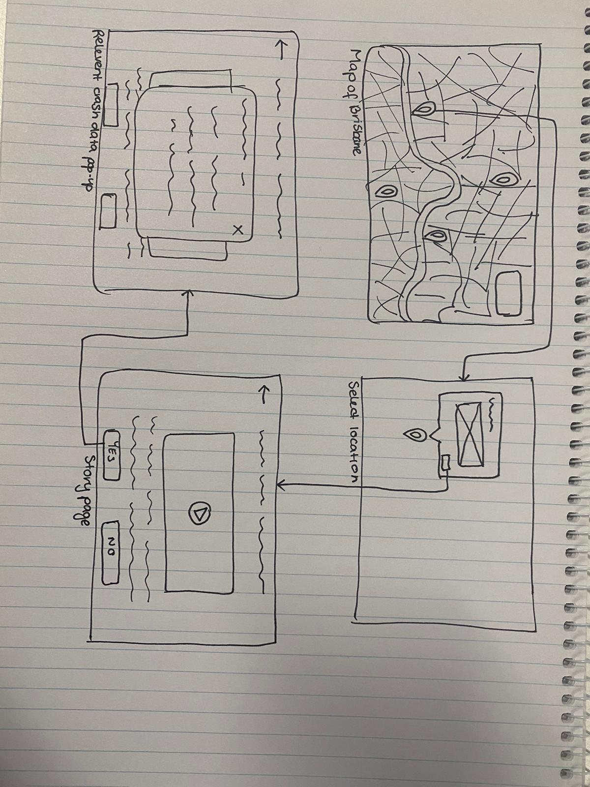

The Rapid Design Sprint was a time-constricted ideation activity aimed at producing a possible idea for the A4 Design Computing Project. Over the course of one week, as a team, we explored the problem set, as well as other A2 Design Inspiration projects to develop a prototype for future development
Our design at the end of the ideation process consisted of a quiz that would give you location information to bike way sections, if you answer the quiz correctly. The quiz would be focussed around bike safety to encourage kids to ride safely on the bike paths they unlock.
(Iteration 1)
(Iteration 2)
My main contributions:
- Leadership
- Ideation
- Ideas around interactivity
- Gamification
I feel that the A3 Design Sprint was a very insightful activity. I particularly enjoyed the fast-paced nature of it.
From the beginning, we had trouble producing a main idea, finding it particularly difficult to choose an idea that would be engaging for a user, while also providing a meaningful interaction. After we decided to center around Alan's idea of a cycling fitness app, I made sure we stepped back ensured that we had an engaging concept that didn't just provide users with information.
Over the course of the process I found it difficult to elicit ideas from Mengxuan and Alan, however, when asked directly, they were more forthcoming with ideas or feedback. Next time I would look to improve this by possibly creating activities or tasks for others to do, to encourage and inspire them to have their say in the project.
Overall, I feel the project was a success, and a good contrast to the main project, and will use it in the future as a method for ideation.